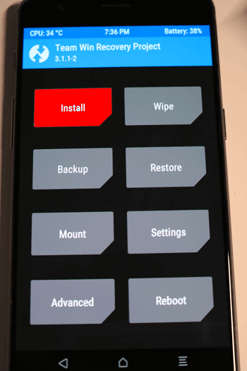
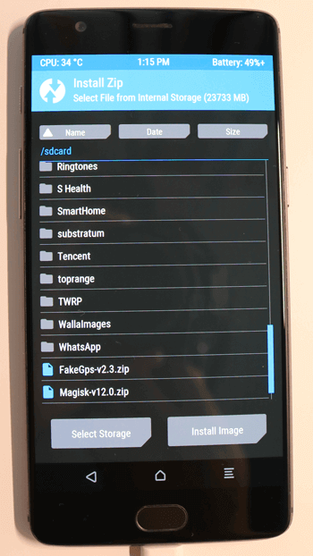
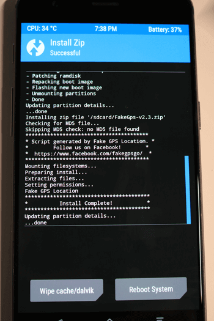
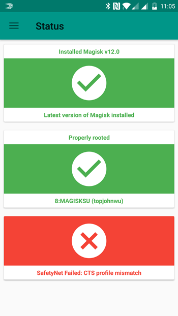
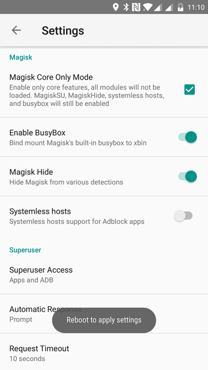
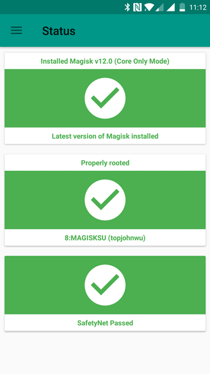

Select language
Fake Gps is work now with Android security patch of march 2017 in Android 6.0.1 and higher, with the only requirement is move to application a /system/priv-app and turn on in mode root in the settings to Fake GPS. This guide is it gonna try to show the steps to follow but some kinds of models it could be changed depending on the mobile phone.
- Downloading Team Win Recovery Project (TWRP) since the oficial page https://twrp.me/Devices/ , searching by a model of mobile phone. The install updates the TWRP it is depend of the mobile phone, with a fast search in google you can get a guide for all kind of phones, in the next video it is show how to install TWRP in Samsung Galaxy S7/S7 Edge.
- Through TWRP we are going to install Magisk y Fake Gps, downloading the both attached file and copy in the phone memory.
- After reboot we are going to install Magisk manager, from the settings of Magisk Manager and set up "Enable Busybox" and "Magisk Hide", for detection, including SafetyNet, that is used to in Android Play, Pokemon Go, Mario Run, etc.
- Now we can use Fake GPS to skip the Android security patch and prevent the app or games from detecting GPS spoofing.
Download Magisk.zip
Download FakeGps.zip



Download Magisk Manager


